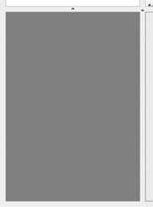

Titelbild
Das Grundgerüst der graphischen Oberfläche von Books besteht
aus 4 Teilen - dem Fenster für Bücherlisten, der Büchersammlung,
der Zusammenfassung und dem Titelbild. Unten links wird das Titelbild
des ausgewählten Buches angezeigt.

Haben Sie kein Buch oder mehrere Bücher ausgewählt, bleibt das Fenster, daß das Titelbild anzeigen soll, grau.
Größe des Anzeigefensters für das Titelbild verändern
Wenn Sie sich die Seitenlesten des Anzeigefensters für das Titelbild
anschauen, bemerken Sie, daß sich an der oberen und an der linken
Seitenleiste ein kleiner Punkt befindet. Wenn Sie auf den Punkt der
oberen Leiste
klicken und die Maustaste gedrückt halten, während Sie den
Mauszeiger nach oben
oder
unten bewegen, so wird die Hohe des Fensters eingestellt. Die Höhe
des Fensters für die Bücherlisten wird dann dementprechend
auch verändert.
Wenn Sie auf den Punkt der unteren Leiste klicken und die Maustaste
gedrückt halten, während Sie den Mauszeiger nach rechts oder links
bewegen, so wird die Breite des Fenster eingestellt. Die Breite der
Büchersammlung und der Zusammenfassung wird dann dementsprechend auch
verändert.